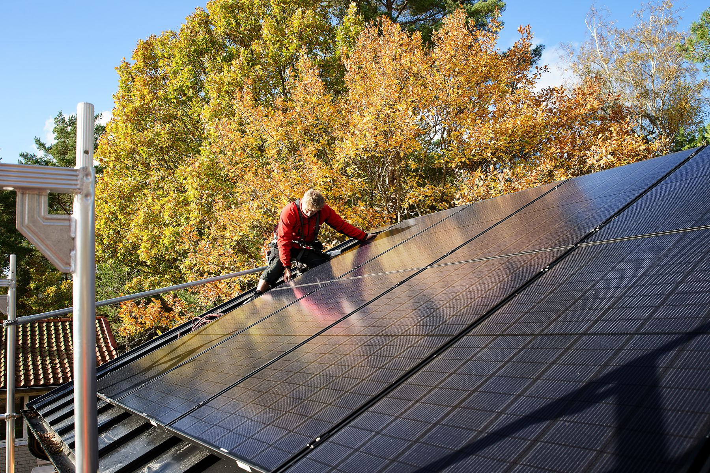
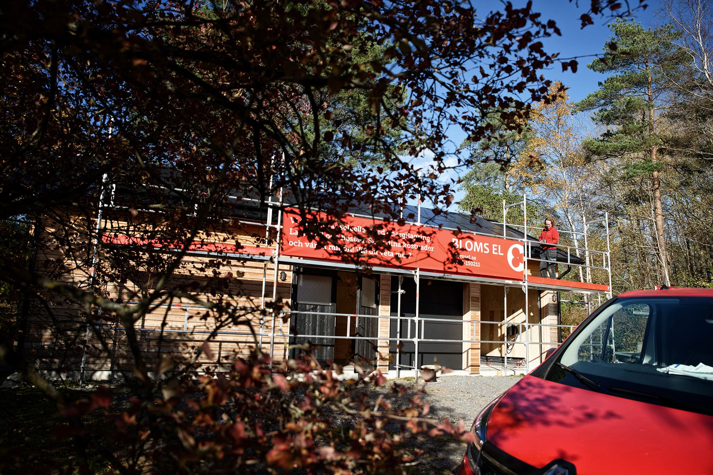

Vi installerar solceller
Minska ditt klimatavtryck utan att göra avkall på din levnadsstandard. Solpaneler är 100 % förnybar energi och en investering för framtiden. Vi planerar, monterar och installerar. Tar hand om allt, kort sagt.
När du anlitar oss ingår
Anskaffningskostnaden betalar sig själv över tid och ökar värdet på din fastighet.
- Ritningar
- Beräkning på elproduktion och besparing
- Batterilagring som ytterligare sänker kostnaderna
- Möjlighet att köra huset från batteri och solpaneler vid strömavbrott
- Åskskydd / potentialutjämnat tak för att leda bort eventuella elchocker
- App för att följa produktion och elbilsladdning
Vad är solceller?
Solceller är ljuskänsliga halvledardioder som omvandlar ljus till elektrisk spänning; energi i form av likström. En växelriktare omvandlar sedan likströmmen till växelström som kan användas i din fastighet, ladda din elbil, lagras för att användas när solen inte lyser eller skickas ut på elnätet.
Var börjar man?
Vår bild är att de flesta börjar med att prata med grannar eller vänner, googla runt och skaffa sig en bild. Det är inget fel i det, men det finns en hel del fällor att gå i och all information är tyvärr inte seriös.
När dina solcellsfunderingar börjar bli allvarliga tycker vi att du tidigt i processen skall kontakta någon som verkligen vet, någon som kan. Som oss till exempel.
Alla våra solcellsprojekt startar med en bedömning av din fastighets förutsättningar; vad som är möjligt att göra och en realistisk kalkyl. Vi gör beräkningar av hållbarhet för vind, hur du skall få ut det mesta av din installation, och vi arbetar bara med handplockade, pålitliga produkter med lång livslängd och god ekonomi.
Installation
Alla projekt, alla solcellsinstallationer vi gör, planeras noga före installation. Och du får information om hela processen före start.
Du får med dig vår kunskap som erfaret elinstallationsföretag in i varje projekt. Det ger dig en trygg och prisvärd installation över tid.
Solcellsenergi
När allt är på plats trimmar vi in och optimerar systemet och du börjar producera din egen gröna el. Överskott lagrar du i batterier eller säljer. Du kan även ladda batterierna med el från nätet när priset är lågt och spara till timmar när det är dyrare, och på så sätt sänka totalkostnaden för din elförbrukning ytterligare.
Du har full kontroll från systemets app och kan i realtid se hela anläggningens förbrukning och produktion. Solcellsteknik är idag en etablerad och standardiserad produkt, men utveckling sker fortfarande och vi uppdaterar oss löpande kring nya lösningar, nya regelverk och innovationer.

Underhåll och service
Solcellspaneler är i stort sett underhållsfria. Regn och snö hjälper till att hålla dem rena och fria från beläggningar. I Göteborg och på västkusten är tjocka snölager sällsynta, men sådana eller mycket löv kan naturligtvis minska effektiviteten tillfälligt. Vill man inte vänta in nästa regnskur kan man borsta bort det. Använd inte snöskyffel.
Solpaneler har mycket lång livslängd, men systemet och växelriktaren mår bra av en översyn och optimering efter några år. Då får du snabb hjälp och vi har alltid svensktalande support.
Hur effektiva är solceller?
Det beror på en rad faktorer. Förutom antal soltimmar och verkningsgrad, det vill säga hur stor del av den infångade solenergin som omvandlas till nyttig energi, påverkas effektiviteten av solpanelernas lutning, hur stor solinstrålningen är, väderstreck och temperatur. Hur stora och många solpanelerna är naturligtvis, och om det är snö eller smuts på dem.
Kontakta oss så lämnar vi en offert utifrån just dina förutsättningar.
Premium kvalité
Det finns många tillverkare av solceller i världen. En installation är en stor investering som skall hålla i många år och vi rekommenderar verkligen alla att välja kvalité med omsorg. Det lönar sig.